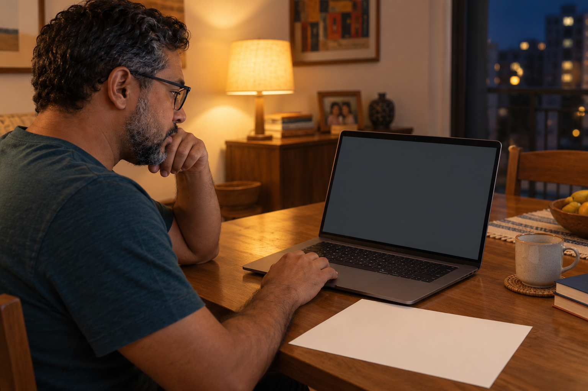
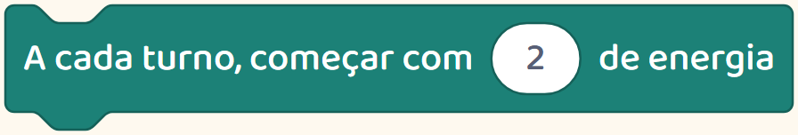

Antes de escolher
O curso promete criatividade e raciocínio.
Peça para ver a atividade que trabalha isso.
O curso promete criatividade e raciocínio.
Peça para ver a atividade que trabalha isso.
Criatividade, raciocínio e preparação para o futuro aparecem em muitas ofertas.
Mas essas palavras, sozinhas, não mostram como será a aula.
Peça um exemplo de atividade.

O que a criança escolhe? O que ela constrói? Como descobre se funcionou?
Veja este jogo de cartas.
O jogador tem dois pontos para gastar. Cada carta custa um ponto. Ele precisa escolher quais cartas usar.
Ao criar essa regra, a criança precisa decidir o que acontece quando os pontos acabam.
A carta continua na mão.
Depois, testa se o jogo impede uma jogada que custa mais do que o jogador tem.
Agora dá para entender o que ela pratica: criar uma regra, prever uma situação e conferir o resultado.

Procure esse tipo de explicação ao comparar atividades.
Aqui mostramos o que as crianças podem aprender criando os próprios jogos.
Siga o perfil para conhecer mais exemplos.